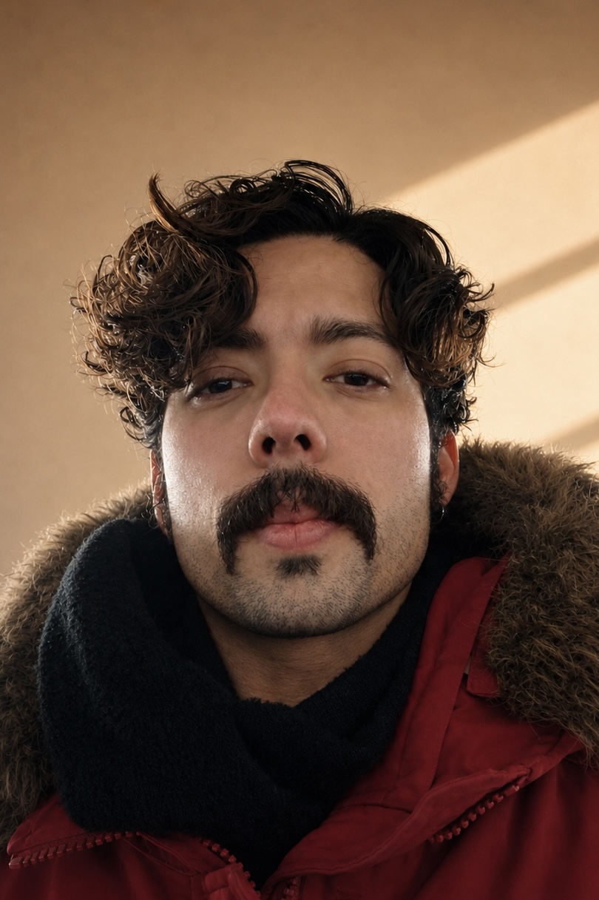

I am a Lead Creative Technologist based in New York City. My expertise lies in immersive environments, generative art, and the exploration of complexity in digital spaces.
I have collaborated with various design studios, often taking on the role of the lead developer. Notably, I served as the Technical Director for WNDR Museum, contributing to the successful launch of three new branches.
Role
Lead Creative Technologist
Based
New York City
Discipline
Immersive and Experiential Installations
Approach
Design & Development